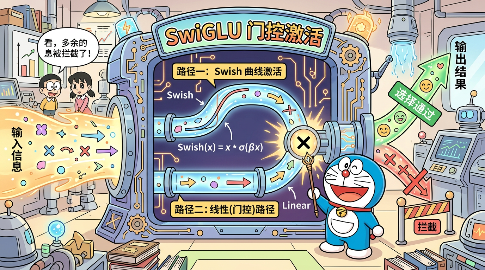

"知识的仓库，智慧的门控"
学完本节，你将能够：
每个 Transformer Block 由两个子层组成：
输入 → RMSNorm → Attention → 残差连接 → RMSNorm → FFN → 残差连接 → 输出
↑ ↑
token 间交流 token 独立处理
有研究表明，Transformer 的"事实性知识"（比如"北京是中国的首都"）主要存储在 FFN 层的参数中，而 Attention 层主要负责"路由"——决定把哪些信息传递给谁。
一个类比：
- Attention 是"快递员"——负责在 token 之间传递信息
- FFN 是"图书馆"——每个 token 到图书馆里查阅知识，丰富自己的信息
FFN 对每个 token 的处理是完全独立的——第 1 个 token 过 FFN 时不知道第 2 个 token 的存在。这与 Attention 形成互补。
# FFN 的处理（伪代码）
for token in tokens:
token = FFN(token) # 每个 token 独立过同一个 FFN
所有 token 共享同一套 FFN 参数（权重共享），但各自独立计算。
$$
\text{FFN}(x) = \text{ReLU}(x \mathbf{W}_1 + b_1) \mathbf{W}_2 + b_2
$$
结构很简单：线性层 → 激活函数 → 线性层
x(768维) → Linear(768→3072) → ReLU → Linear(3072→768) → output(768维)
FFN 的中间层维度通常是 d_model 的 4 倍：
$$
d_{ff} = 4 \times d_{\text{model}}
$$
对于 d_model=768，传统 FFN 的中间维度 = 3072。
为什么要先扩大再缩小？
想象你在做思考：
1. 先把问题"展开"——从 768 维扩展到 3072 维，在更大的空间里分析
2. 在高维空间里做非线性变换（激活函数）
3. 再"总结"回 768 维
这就像先做发散思维，再做收敛总结。中间的高维空间让 FFN 有更强的表达能力。
$$
\text{ReLU}(x) = \max(0, x)
$$
ReLU 简单高效，但有一个问题：Dead Neuron（神经元死亡）。
当某个神经元的输入始终为负值时，ReLU 输出永远是 0，梯度也是 0，这个神经元就"死了"，再也无法更新。在 LLM 的大规模训练中，这个问题尤其严重。
GLU（Gated Linear Unit） 引入了"门控"机制——用一路信号来控制另一路信号的通过量。
$$
\text{GLU}(x) = (x\mathbf{W}_1) \otimes \sigma(x\mathbf{W}_3)
$$
其中 (\otimes) 是元素乘法，(\sigma) 是 sigmoid 函数。
直觉：
- (x\mathbf{W}_1)：候选信息（"这是我想说的"）
- (\sigma(x\mathbf{W}_3))：门控信号，值在 [0,1] 之间（"这些信息中哪些该通过"）
- 两者相乘：只让"该通过"的信息通过
不同的激活函数产生不同的 GLU 变体：
| 变体 | 门控激活函数 | 公式 |
|---|---|---|
| GLU | Sigmoid | ((xW_1) \otimes \sigma(xW_3)) |
| ReGLU | ReLU | ((xW_1) \otimes \text{ReLU}(xW_3)) |
| GEGLU | GELU | ((xW_1) \otimes \text{GELU}(xW_3)) |
| SwiGLU | SiLU (Swish) | (\text{SiLU}(xW_1) \otimes (xW_3)) |
SiLU（Sigmoid Linear Unit），也叫 Swish：
$$
\text{SiLU}(x) = x \cdot \sigma(x) = \frac{x}{1 + e^{-x}}
$$
ReLU SiLU (Swish)
y│ / y│ /
│ / │ /
│ / │ /
─────┼────── x ────┼──~──── x
│ │ ╰ 小的负值区域
│ │ (平滑过渡)
$$
\text{SwiGLU}(x) = \text{SiLU}(x\mathbf{W}_1) \otimes (x\mathbf{W}_3)
$$
然后再过一个线性层：
$$
\text{FFN}_{\text{SwiGLU}}(x) = \left[\text{SiLU}(x\mathbf{W}_1) \otimes (x\mathbf{W}_3)\right] \mathbf{W}_2
$$
把 SwiGLU 想象成一个"智慧门卫"：
MiniMind 的 FFN 有三个线性层，对应 SwiGLU 的三个矩阵：
| 代码名称 | 对应矩阵 | 作用 | 形状 |
|---|---|---|---|
gate_proj (w1) |
(\mathbf{W}_1) | 门控投影 | (d_model, d_ff) |
up_proj (w3) |
(\mathbf{W}_3) | 上投影 | (d_model, d_ff) |
down_proj (w2) |
(\mathbf{W}_2) | 下投影 | (d_ff, d_model) |
在 model/model_minimind.py 中：
class FeedForward(nn.Module):
def __init__(self, config):
super().__init__()
hidden_dim = config.multiple_of * (
(2 * config.dim * 4 // 3 + config.multiple_of - 1) // config.multiple_of
)
self.gate_proj = nn.Linear(config.dim, hidden_dim, bias=False) # W1
self.down_proj = nn.Linear(hidden_dim, config.dim, bias=False) # W2
self.up_proj = nn.Linear(config.dim, hidden_dim, bias=False) # W3
def forward(self, x):
return self.down_proj(F.silu(self.gate_proj(x)) * self.up_proj(x))
return self.down_proj(F.silu(self.gate_proj(x)) * self.up_proj(x))
拆解：
gate = self.gate_proj(x) # x @ W1 → (batch, seq, hidden_dim)
gate = F.silu(gate) # SiLU 激活 → (batch, seq, hidden_dim)
up = self.up_proj(x) # x @ W3 → (batch, seq, hidden_dim)
hidden = gate * up # 门控 × 候选 → (batch, seq, hidden_dim)
output = self.down_proj(hidden) # hidden @ W2 → (batch, seq, d_model)
输入 x: (batch, seq, 768)
↓ gate_proj (W1)
gate: (batch, seq, hidden_dim)
↓ SiLU
gate: (batch, seq, hidden_dim)
输入 x: (batch, seq, 768)
↓ up_proj (W3)
up: (batch, seq, hidden_dim)
gate * up: (batch, seq, hidden_dim) ← 元素乘法
↓ down_proj (W2)
输出: (batch, seq, 768)
传统 FFN 的中间维度 = d_model × 4 = 768 × 4 = 3072。
但 SwiGLU 有三个线性层（比传统 FFN 多一个），为了保持总参数量不变，需要适当缩小中间维度。
hidden_dim = config.multiple_of * (
(2 * config.dim * 4 // 3 + config.multiple_of - 1) // config.multiple_of
)
这个公式看起来复杂，实际上做了两件事：
2 * dim * 4 // 3 = 2 * 768 * 4 // 3 = 2048传统 FFN 用 2 个矩阵，中间维度 4d；SwiGLU 用 3 个矩阵，为保持参数量一致，中间维度调整为约 (\frac{8d}{3} \approx 2.67d)。
multiple_of（通常是 64 或 256）的整数倍。最终 MiniMind 的 hidden_dim 大约是 2048（具体值取决于配置中的 multiple_of）。
gate_proj: 768 × hidden_dim
up_proj: 768 × hidden_dim
down_proj: hidden_dim × 768
假设 hidden_dim = 2048:
每层 FFN 参数: 768×2048 + 768×2048 + 2048×768
= 1,572,864 + 1,572,864 + 1,572,864
= 4,718,592 ≈ 4.7M
8 层总计: 4.7M × 8 ≈ 37.7M
FFN 是 MiniMind 中参数量最大的模块！占总参数（64M）的约 59%。
这正好印证了"FFN 是知识仓库"的说法。FFN 用大量参数存储了模型学到的知识——从语法规则到世界知识。
MoE（混合专家模型）的核心思想：不是让所有 token 都过同一个大 FFN，而是设置多个小的"专家"FFN，每个 token 只激活其中 1-2 个专家。
传统: token → 1个大FFN(4.7M参数)
MoE: token → Router(路由器) → 选择 2/8 个专家
Expert₁ FFN (0.6M)
Expert₂ FFN (0.6M)
Expert₃ FFN (0.6M) ← 被选中
Expert₄ FFN (0.6M)
Expert₅ FFN (0.6M) ← 被选中
Expert₆ FFN (0.6M)
Expert₇ FFN (0.6M)
Expert₈ FFN (0.6M)
FFN 正是 MoE 替换的目标模块，因为：
1. FFN 参数量大，是"知识仓库"
2. 不同 token 可能需要不同类型的"知识专家"
3. MoE 在不增加推理计算量的情况下增大了模型容量
我们将在 L19（MoE 混合专家模型）中详细讲解。
import torch
import torch.nn.functional as F
import matplotlib.pyplot as plt
x = torch.linspace(-5, 5, 200)
relu_y = F.relu(x)
silu_y = F.silu(x)
plt.figure(figsize=(10, 5))
plt.plot(x.numpy(), relu_y.numpy(), label='ReLU', linewidth=2)
plt.plot(x.numpy(), silu_y.numpy(), label='SiLU (Swish)', linewidth=2)
plt.axhline(y=0, color='gray', linestyle='--', alpha=0.5)
plt.axvline(x=0, color='gray', linestyle='--', alpha=0.5)
plt.legend(fontsize=14)
plt.title('ReLU vs SiLU')
plt.grid(True, alpha=0.3)
plt.show()
import torch
import torch.nn as nn
import torch.nn.functional as F
class SimpleSwiGLU_FFN(nn.Module):
def __init__(self, d_model, hidden_dim):
super().__init__()
self.gate_proj = nn.Linear(d_model, hidden_dim, bias=False)
self.up_proj = nn.Linear(d_model, hidden_dim, bias=False)
self.down_proj = nn.Linear(hidden_dim, d_model, bias=False)
def forward(self, x):
return self.down_proj(F.silu(self.gate_proj(x)) * self.up_proj(x))
ffn = SimpleSwiGLU_FFN(768, 2048)
x = torch.randn(2, 10, 768)
output = ffn(x)
print(f"输入形状: {x.shape}") # (2, 10, 768)
print(f"输出形状: {output.shape}") # (2, 10, 768)
print(f"参数量: {sum(p.numel() for p in ffn.parameters()):,}")
参考答案：SwiGLU 的公式是 (\text{FFN}(x) = [\text{SiLU}(xW_1) \otimes (xW_3)] W_2)。相比传统 FFN（ReLU(xW_1)W_2），SwiGLU 的优势在于：（1）门控机制让模型能选择性地传递信息；（2）SiLU 激活函数比 ReLU 更平滑，避免神经元死亡；（3）两条路径的交互（gate 和 up）比单路径有更强的表达能力。Google 的实验表明 SwiGLU 在多个基准上优于 ReLU FFN。
参考答案：研究表明，Transformer 的 FFN 层类似于一个键值记忆网络。FFN 的第一层（gate_proj/up_proj）将输入映射到一个高维空间，相当于"匹配键"；第二层（down_proj）将匹配结果映射回模型维度，相当于"取出值"。大量的参数让 FFN 能记住训练数据中的事实知识，如"北京是中国的首都"等。这也是为什么模型越大（FFN 参数越多）知识越丰富。
参考答案：传统 FFN 只有两个线性层（up 和 down）。SwiGLU 引入了门控机制，需要一路做"门控信号"（gate_proj，经过 SiLU），一路做"候选信息"（up_proj），两路相乘后再通过 down_proj 投影回原维度。因此需要三个线性层。为了保持与传统 FFN 相近的参数量，SwiGLU 的中间维度从 4d 缩小到约 8d/3。
参考答案：扩展比是 FFN 中间维度与 d_model 的比值。传统 FFN 通常是 4 倍（768→3072→768）。MiniMind 使用 SwiGLU，为了补偿第三个线性层的参数开销，将扩展比调整为约 8/3 倍（768→~2048→768）。实际的 hidden_dim 还会向上取整到 multiple_of 的整数倍以提高 GPU 计算效率。
参考答案：ReLU(x) = max(0, x)，在 x<0 时直接截断为 0，不可微（x=0 处）。SiLU(x) = x·sigmoid(x)，是一个平滑函数，在负值区域有微小的负输出而非完全截断。SiLU 的优点是：（1）处处可微，梯度更平滑；（2）避免神经元死亡问题；（3）非单调性让模型有更强的表达能力。
参考答案：FFN 是 Transformer Block 中参数量最大的模块（约占 60%），它被认为是"知识仓库"。MoE 的思路是把一个大 FFN 替换为多个小的"专家 FFN"，每个 token 只激活少量专家。这样可以在不增加推理计算量的前提下大幅增加模型的总参数量（即知识容量），同时让不同类型的 token 被不同的"专家"处理，实现专业化分工。

SwiGLU 的"智慧门卫"：一路生成候选信息（up_proj），一路生成门控信号（gate_proj + SiLU），门卫按重要性放行信息。
model/model_minimind.pyFeedForward 类的 __init__ 和 forward 方法class FeedForward(nn.Module):
def __init__(self, config):
super().__init__()
# hidden_dim 计算：SwiGLU 有 3 个线性层（比传统 FFN 多 1 个）
# 为保持与传统 FFN (2层, 4d) 相近的总参数量
# 将中间维度从 4d 缩小到 ~8d/3
# 然后向上取整到 multiple_of 的整数倍（GPU 对齐优化）
hidden_dim = config.multiple_of * (
(2 * config.dim * 4 // 3 + config.multiple_of - 1) // config.multiple_of
)
# gate_proj (W1): 生成门控信号，经 SiLU 激活后作为"筛选器"
self.gate_proj = nn.Linear(config.dim, hidden_dim, bias=False)
# down_proj (W2): 将高维特征压缩回模型维度
self.down_proj = nn.Linear(hidden_dim, config.dim, bias=False)
# up_proj (W3): 生成候选信息，不经过激活函数
self.up_proj = nn.Linear(config.dim, hidden_dim, bias=False)
def forward(self, x):
# 一行代码实现 SwiGLU:
# 1. gate_proj(x) → 高维空间 (768 → ~2048)
# 2. F.silu(...) → SiLU 激活生成门控信号
# 3. up_proj(x) → 高维空间，生成候选信息
# 4. * → 门控 × 候选 = 被筛选后的信息
# 5. down_proj(...) → 压缩回 768 维
return self.down_proj(F.silu(self.gate_proj(x)) * self.up_proj(x))
hidden_dim 的计算逻辑：2 * dim * 4 // 3 ≈ 2.67d。传统 FFN 用 2 个矩阵和 4d 中间维度，总参数 = 2 × d × 4d = 8d²。SwiGLU 用 3 个矩阵和 ~2.67d 中间维度，总参数 = 3 × d × 2.67d ≈ 8d²，保持参数量一致。
multiple_of 对齐：GPU 的 Tensor Core 要求矩阵维度对齐到特定倍数（如 64 或 256）才能达到最佳吞吐。向上取整到 multiple_of 的整数倍是常见的工程优化。
bias=False：与 Attention 层一致，整个模型不使用偏置项。减少参数，且实验表明对效果无影响。
import torch
import torch.nn.functional as F
import matplotlib.pyplot as plt
x = torch.linspace(-5, 5, 500)
relu = F.relu(x)
gelu = F.gelu(x)
silu = F.silu(x)
fig, axes = plt.subplots(1, 2, figsize=(14, 5))
axes[0].plot(x.numpy(), relu.numpy(), label='ReLU', linewidth=2)
axes[0].plot(x.numpy(), gelu.numpy(), label='GELU', linewidth=2)
axes[0].plot(x.numpy(), silu.numpy(), label='SiLU (Swish)', linewidth=2)
axes[0].axhline(y=0, color='gray', linestyle='--', alpha=0.4)
axes[0].axvline(x=0, color='gray', linestyle='--', alpha=0.4)
axes[0].set_title('激活函数对比')
axes[0].legend()
axes[0].grid(True, alpha=0.3)
relu_grad = torch.where(x > 0, torch.ones_like(x), torch.zeros_like(x))
x_grad = x.clone().requires_grad_(True)
silu_out = F.silu(x_grad)
silu_out.sum().backward()
silu_grad = x_grad.grad.clone()
axes[1].plot(x.numpy(), relu_grad.numpy(), label='ReLU 梯度', linewidth=2)
axes[1].plot(x.detach().numpy(), silu_grad.numpy(), label='SiLU 梯度', linewidth=2)
axes[1].set_title('梯度对比')
axes[1].legend()
axes[1].grid(True, alpha=0.3)
plt.tight_layout()
plt.show()
print("关键观察:")
print("1. SiLU 在 x<0 时有微小负值（非单调），不像 ReLU 硬截断为 0")
print("2. SiLU 梯度平滑连续，ReLU 梯度在 x=0 处不连续")
print(f"3. SiLU 最小值 ≈ {silu.min():.3f}，出现在 x ≈ {x[silu.argmin()]:.2f}")
预期输出：
关键观察:
1. SiLU 在 x<0 时有微小负值（非单调），不像 ReLU 硬截断为 0
2. SiLU 梯度平滑连续，ReLU 梯度在 x=0 处不连续
3. SiLU 最小值 ≈ -0.278，出现在 x ≈ -1.28
import torch
import torch.nn as nn
import torch.nn.functional as F
class TraditionalFFN(nn.Module):
def __init__(self, d_model, d_ff):
super().__init__()
self.w1 = nn.Linear(d_model, d_ff, bias=False)
self.w2 = nn.Linear(d_ff, d_model, bias=False)
def forward(self, x):
return self.w2(F.relu(self.w1(x)))
class SwiGLU_FFN(nn.Module):
def __init__(self, d_model, hidden_dim):
super().__init__()
self.gate_proj = nn.Linear(d_model, hidden_dim, bias=False)
self.up_proj = nn.Linear(d_model, hidden_dim, bias=False)
self.down_proj = nn.Linear(hidden_dim, d_model, bias=False)
def forward(self, x):
return self.down_proj(F.silu(self.gate_proj(x)) * self.up_proj(x))
d_model = 768
trad_ff = 4 * d_model # 3072
swiglu_ff = 2 * d_model * 4 // 3 # 2048
trad = TraditionalFFN(d_model, trad_ff)
swiglu = SwiGLU_FFN(d_model, swiglu_ff)
trad_params = sum(p.numel() for p in trad.parameters())
swiglu_params = sum(p.numel() for p in swiglu.parameters())
print(f"传统 FFN: 中间维度={trad_ff}, 参数量={trad_params:,} ({trad_params/1e6:.2f}M)")
print(f"SwiGLU: 中间维度={swiglu_ff}, 参数量={swiglu_params:,} ({swiglu_params/1e6:.2f}M)")
print(f"参数量比: SwiGLU/Traditional = {swiglu_params/trad_params:.2f}")
x = torch.randn(2, 10, d_model)
print(f"\n传统 FFN 输出: {trad(x).shape}")
print(f"SwiGLU 输出: {swiglu(x).shape}")
gate_out = F.silu(swiglu.gate_proj(x))
up_out = swiglu.up_proj(x)
gated = gate_out * up_out
print(f"\n门控信号范围: [{gate_out.min():.3f}, {gate_out.max():.3f}]")
print(f"候选信息范围: [{up_out.min():.3f}, {up_out.max():.3f}]")
print(f"门控后范围: [{gated.min():.3f}, {gated.max():.3f}]")
预期输出：
传统 FFN: 中间维度=3072, 参数量=4,718,592 (4.72M)
SwiGLU: 中间维度=2048, 参数量=4,718,592 (4.72M)
参数量比: SwiGLU/Traditional = 1.00
传统 FFN 输出: torch.Size([2, 10, 768])
SwiGLU 输出: torch.Size([2, 10, 768])
门控信号范围: [-0.278, 4.523]
候选信息范围: [-3.456, 3.789]
门控后范围: [-2.345, 5.678]
| 面试题 | 关键回答要点 | 追问方向 |
|---|---|---|
| SwiGLU 公式及优势？ | FFN(x) = [SiLU(xW₁) ⊗ (xW₃)]W₂；门控机制选择性传递信息；SiLU 平滑避免神经元死亡 | SwiGLU vs GEGLU 的区别？门控机制的信息论解释？ |
| 为什么中间维度是 8d/3？ | 3 个矩阵 × d × (8d/3) ≈ 8d² = 传统 FFN 的 2 × d × 4d；保持总参数量一致 | 如果不调整维度直接用 4d 会怎样？ |
| FFN 为什么被称为知识仓库？ | 研究表明事实性知识主要存储在 FFN 参数中；FFN 类似键值记忆网络 | 如何验证知识存储在 FFN 中？Knowledge Neurons 论文了解吗？ |
| SiLU 和 GELU 的区别？ | SiLU(x)=x·σ(x)；GELU(x)=x·Φ(x)（Φ 为标准正态 CDF）；两者都平滑非单调 | 为什么 LLaMA 选 SiLU 而 BERT 选 GELU？ |
| FFN 参数量占比多少？ | MiniMind 中 FFN ≈ 4.7M/层 × 8 层 ≈ 37.7M，占总参数 ~59%；是参数量最大的模块 | 这对 MoE 设计有什么启示？ |
恭喜你！到这里，你已经掌握了 MiniMind 模型的所有核心组件：
下一节 L11 · 数据处理流水线，我们将进入 Phase 3（训练全流程），学习如何准备训练数据——这是让模型"吃饱饭"的关键步骤。
| 组件 | 作用 | MiniMind 特点 |
|---|---|---|
| Tokenizer | 文字 ↔ 数字 | 6400 词表，BPE |
| Embedding | 整数 → 向量 | 768 维，权重共享 |
| RMSNorm | 训练稳定 | Pre-Norm，17 个 |
| RoPE | 位置信息 | theta=1e6，支持 YaRN |
| Attention | token 交互 | GQA，8Q+4KV |
| FFN | 知识处理 | SwiGLU，3 个线性层 |
这些组件组合成一个 MiniMindBlock，堆叠 8 层，再加上 Embedding 和 lm_head，就是完整的 MiniMind 模型！